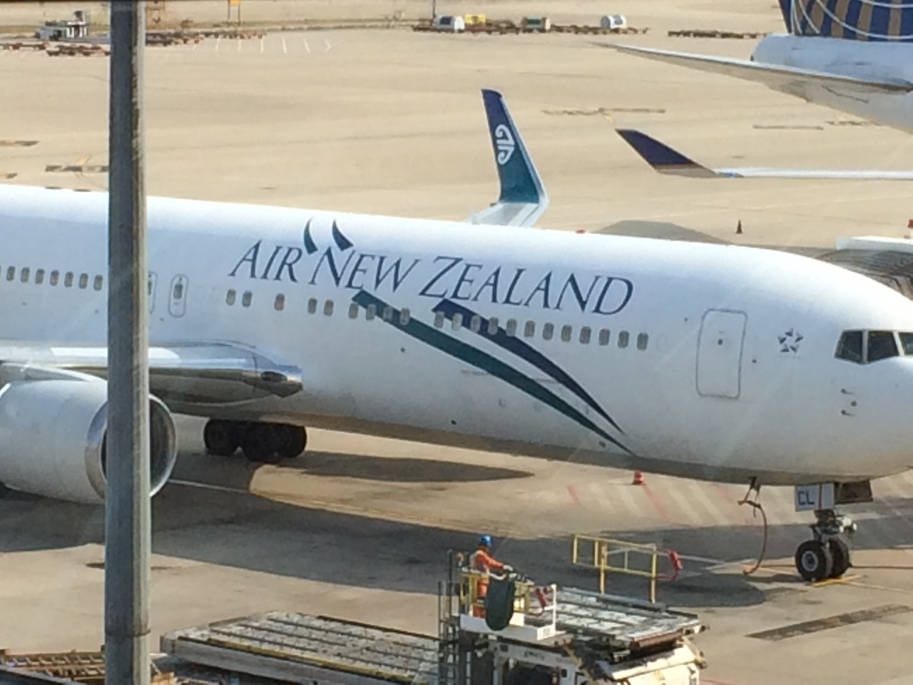

这里是奥克兰（day1、day2）
11.15日上午10点多就从家出发去浦东国际机场了。飞机预计14：15分起飞，这将是我有生以来最长一段时间的飞行，11个多小时的飞行啊，对于不长坐飞机的我来说既紧张又兴奋，因为经过了2014年的“空难”年之后，对坐飞机这件事多少有些小担心。先给这架可爱的波音767-300来张靓照吧，他长得的确很可爱，机身上写着Air New Zealand，很干净清爽的绿色，象征着nz的纯净吧。

在夜晚看见机舱外那只孤独的翅膀闪烁着白色的灯，我内心暗暗祈祷，一定要平安降落啊。好在整个飞行过程都很平稳除了中间有几次强大的气流另机身有些颠簸之外。。。经过了11个多小时的飞行飞机终于在当地时间11.16日上午7.15降落奥克兰机场。
说实在的，如果你看惯大城市的气派，初次到奥克兰机场，这在国内绝对就是个2、3线城市的机场标准，不过国际国内航班倒是挺多。因此跟浦东国际机场简直没法比了，也比不上台北的桃园机场，因为台北机场给我印象非常好，很有艺术感。在nz出境检查相对较严格，但也没传说中的那么严格，我们只是告诉了安检员带了些什么，卡片上的东西如实填写就算过了，因此还在心疼我丢弃的柚子和巧克力呢！
英语啊，又一次被打击了，在国内，我感觉自己英语不差啊。到了nz简直被打击到死，这里的老外说话语音语调跟我平时挺得不太一样之外，语速也很快。在机场问个哪里有Vodafone电话卡卖都纠结到死。最后兜兜花了30刀买到一张DATA SIM，就是只能用来上网的卡。另外忘记说了，在机场第一个Currency Exchange处就换了5000元人民币，只换到了870+纽币，汇率5.7貌似，后来发现真心不划算，不应该在那里换，在Auckland City有很多货币兑换处，都比那里优惠！还好只换了5000人民币。我们在机场找到了air bus买了往返的车票，28刀每人。在机场大巴上，英语再一次被打击，问司机Queen Street在那里下，反正叽里呱啦说了一堆也没听清楚，哎，这英语让我怀疑是不是应该移民奥克兰。。。终于在air bus进入市区后第一站，我们就下车了，还好兜兜做了攻略，那站的ID是7061，我们看到站牌上得7061就赶紧下车了。顺便说下，nz的bus人很少，几乎都有座位，很舒适。从机场到市区一路上开的那条路叫Dominion Rd.，非常干净整洁，两旁都是居民区一类的house，兜兜说很喜欢这里。Queen Street在奥克兰算是条大路了，其实也就2公里不到的长度，令人不爽得是大斜坡特别多，走起来让人感觉吃力。我们找到了Kiwi Hotel，暂时不能check in，只能寄存行李。在印度小哥的帮助下，兜兜的电话卡终于可以上网了，好像是那个4g功能enable造成的，关闭就可以了。说实在的，第一天到奥克兰就感到很累，5个小时的时差也是时差啊，特别想睡觉。先让老妈在hotel一楼大厅的休息沙发上睡会，我和兜兜出去逛了下，沿着queen street一直走。老实说，第一天就是各种不习惯，路不熟悉，语言不熟悉，说话听不太懂，让我倍感失落，我越来越在怀疑将来是不是有勇气来奥克兰生活。。。走在奥克兰大街上真是什么人种都有，中国人，印度人，毛利人，白人。。。而且每个人穿衣服都有自己的个性，不像上海都大同小异。难道这就是文化大熔炉吗？兜兜说她感觉不到这里是国外呢，可能是好多地方有中文字吧，她说比较喜欢全是白人的地方，这点我倒和她不太一样，我看见中文会倍感亲切的，到一个都是白人的地方，语言文化上都难以融入岂不是很失落？我们在New World里买了吃的，这里三文鱼，牛排，牛奶，奇异果，薯片，巧克力比国内便宜，我们买了不少。晚上出来又在里面买了些。我感觉来奥克兰尽是逛超市了。。。晚上极度乏力很快就进入梦乡了。。。
第二天早上醒来已经是中午12点了啊！！我的霍比屯，我得怀托莫萤火虫洞，这些东西都泡汤了。。。。天，瞬间觉得nz白来了，不知道为何可以睡那么久，而且早上奥克兰雨特别大，在酒店睡到自然醒可真是舒服啊。吃完饭后我们赶紧就出发了，最后去了Kelly Tarlton海底世界，看到了帝企鹅，很可爱，但是其他内容就一般了。30刀的价格不便宜啊。出来后已经是4点多了，我们沿着海岸线一直走，走回了Queen Street.在Count Down超市又买了一堆吃的回酒店了，这一天又算结束了。我感到很遗憾，错过了霍比屯和萤火虫洞，希望明天皇后镇的行程别再错过什么了。明天6点起床，出发去皇后镇！！